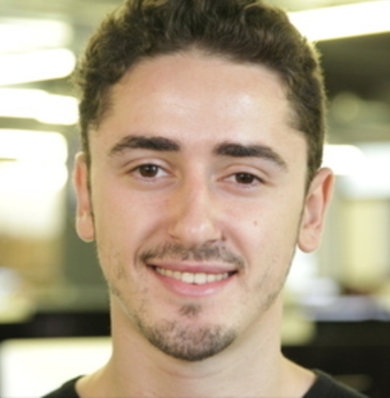

Raphael Krief

Formations
Ecole 42 (2016-2018):
- Préparation au titre "d'Architecte en technologie du numérique"
- Spécialisation Algorithme/IA
Formation communication relationnelle
"EFE" à Paris 1er en Fevrier 2014.
Formation management
de "REVEL'COM" à Paris 15eme en Janvier 2017.
Formation management
de "REVEL'COM" à Paris 15eme en Janvier 2017.
Media Training
Openclassrooms à Paris en Janvier 2021.
Baccalauréat série S
Mention "bien" en juillet 2014
Compétences
Stack technique
Python, API REST, GRPC, Flask, Docker, Kubernetes, SQL, Kafka, POO
Langues
Anglais, Hébreu
Expérience professionnelle
Software engineer chez Bloom (novembre 2020 - aujourd'hui)
- Création d'une architecture en micro-services en streaming (kafka)
- Mise en place d'un service GRPC de tokenisation multi-langues
Data engineer at Southpigalle (septembre 2018 - novembre 2020)
- Responsable NLP: Mise en place de micro service de la création à la mise en production (token, stem, lemm, POS tag, Flask, Python, Docker, API, Azure)
- Travail en collaboration avec Data-Scientists: création de model de classification (sklearn) et d’analyse de sentiment (BERT, nltk)
Mentor chez OpenClassrooms (mars 2017 à aujourd’hui)
Professeur et coach particulier pour les étudiants effectuant leurs formations en ligne Openclassrooms.
Professeur particulier Superprof (décembre 2020 à aujourd’hui)
Cours et session de mise a niveau sur des technologies specifiques (Docker, Python, Flex)